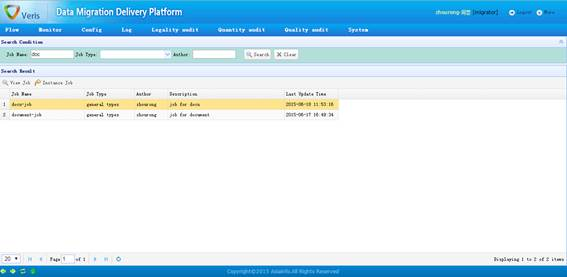
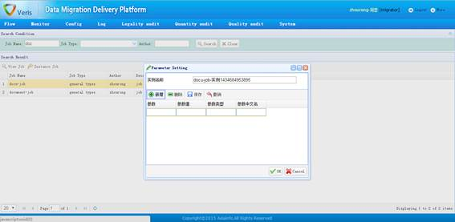
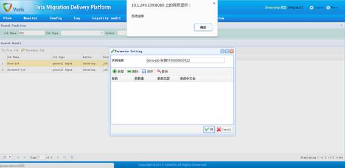

1、作业实例化查询

作业实例化查询页面
功能描述：
作业实例化查询页面显示了当前所有作业的基本信息，用户可以在查询功能区中根据查询条件进行筛选。
选中某个作业，可以对该作业进行查看、实例化等操作。
2、作业实例化操作

作业实例化操作页面
功能描述：
在查询页面中选中一个作业后，点击“Instance Job”按钮弹出作业实例化页面；在实例化界面中，作业内各节点中的参数若未设置参数值的，需要在此设置好参数值，然后才能成功实例化该作业。
注意事项：
如果实例化出现“拒绝连接”的错误，请联系系统管理员，此问题是后台服务异常造成的，需要系统管理员核查。如下图：

实例化错误提示